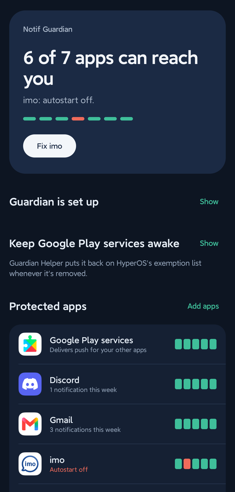
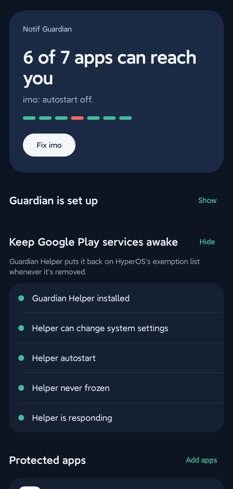
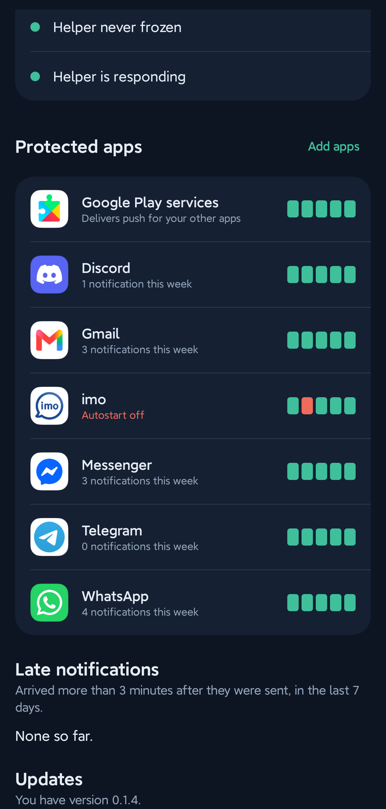

Qué hace
Elige las apps cuyas notificaciones te importan. Guardian las vigila y arregla lo que HyperOS estropea.
- Mantiene despierto Google Play servicesLa única solución que los ajustes de HyperOS no permiten, y de la que dependen todas las apps.
- Revisa la ruta de entrega de cada appEn ejecución, inicio automático, ahorro de batería, actividad en segundo plano, congelada o no, de un vistazo.
- Un toque hasta el ajuste correctoAbre la pantalla exacta de HyperOS para cada problema, sin que tengas que buscarla.
- Te avisa cuando matan una appY la reactiva con un toque, para que no te pierdas nada.
- Mide las notificaciones tardíasMuestra cuánto se retrasó cada una, para que veas que funciona.
- Privado por diseñoLee cuándo llegó una notificación, nunca lo que dice. Solo se conecta a internet para buscar actualizaciones.
Míralo en un teléfono real
Cada app que proteges recibe cinco comprobaciones, y la que sale en rojo trae un botón para arreglarla.

Estado de un vistazoCuántas apps pueden alcanzarte, y un botón para lo que falla. 
Mantén despierto Google Play servicesLa lista de configuración de Guardian Helper, todo en verde. 
Estado de cada appCinco comprobaciones por app y un registro de notificaciones tardías.
Capturas de un Redmi Note 14 Pro+ con HyperOS 3. La app está en inglés.
Instalación
Unos diez minutos, una sola vez, todo en tu teléfono. No hace falta ordenador.
-
Instala Notif Guardian
Descarga
NotifGuardianarriba, ábrelo en tu teléfono y permite la instalación desde tu navegador o gestor de archivos. Abre la app y pon en verde todas las filas de Guardian is set up; después toca Add apps.Si Android bloquea el acceso a notificaciones (Notification access) porque la app "proviene de una fuente desconocida": abre la información de la app (App info), toca ⋮ arriba a la derecha, elige Allow restricted settings (permitir ajustes restringidos) y vuelve a intentarlo. Android lo pregunta una vez para cualquier app instalada desde un archivo descargado.
-
Instala Guardian Helper
Descarga
GuardianHelperarriba e instálalo del mismo modo. No tiene icono: trabaja en segundo plano para Notif Guardian. HyperOS puede avisar de que está hecha para una versión antigua de Android; es lo esperado, porque es la única forma de que el helper haga su trabajo.Si tu teléfono se niega a instalarla, hazlo desde un ordenador: activa USB debugging (depuración por USB) e Install via USB (instalar vía USB) en las opciones de desarrollador, conecta el teléfono y ejecuta
adb install --bypass-low-target-sdk-block GuardianHelper-x.y.z.apk
-
Termina en la app
Abre Keep Google Play services awake y pon todas las filas en verde:
- Permite Modify system settings (modificar ajustes del sistema) al helper
- Activa el Autostart (inicio automático) del helper
- Configura el Battery saver (ahorro de batería) del helper en No restrictions (sin restricciones)
- Toca Open helper, confirma la revisión de Android y luego toca Test helper
Apoya el desarrollo
Notif Guardian es gratis y de código abierto. Si arregló tus notificaciones, una pequeña donación ayuda a mantenerlo.
Dar una estrella al proyecto en GitHub ayuda a que más gente lo encuentre.
Preguntas
¿Por qué las notificaciones solo llegan cuando abro la app?
HyperOS congela Google Play services mientras la pantalla está apagada. Las notificaciones push de casi todas las apps pasan por él, así que esperan hasta que desbloqueas. Poner el ahorro de batería de una app en "No restrictions" ayuda a esa app, pero HyperOS no ofrece ese ajuste para Google Play services. Ese es el hueco que cubre Notif Guardian.
¿Necesita root?
No, ni tampoco un ordenador: las dos apps se instalan en el teléfono y todo sigue funcionando tras reiniciar. Solo si tu teléfono se niega a instalar el helper necesitarás un ordenador, una vez.
¿En qué teléfonos funciona?
En teléfonos Xiaomi, Redmi y POCO con HyperOS. Está probado en un Redmi Note 14 Pro+ con HyperOS 3. Las versiones antiguas de MIUI pueden funcionar solo en parte. Si algo falla, toca Share diagnostics en la app y abre una incidencia (issue) en GitHub.
¿Gasta batería?
Apenas. Guardian revisa tus apps una vez por minuto y reacciona cuando HyperOS cambia su lista. Mantener despierto Google Play services es lo que ya hace cualquier teléfono Android que no sea Xiaomi.
Telegram a veces sigue llegando un poco tarde. ¿Por qué?
Si estás activo en Telegram Desktop o Web, los servidores de Telegram retienen el push a tu teléfono a propósito. El teléfono lo muestra en cuanto llega.
¿Lee mis mensajes?
No. Solo registra qué app publicó una notificación y cuándo, nunca el texto. Nada sale de tu teléfono a menos que tú mismo compartas un archivo de diagnóstico.